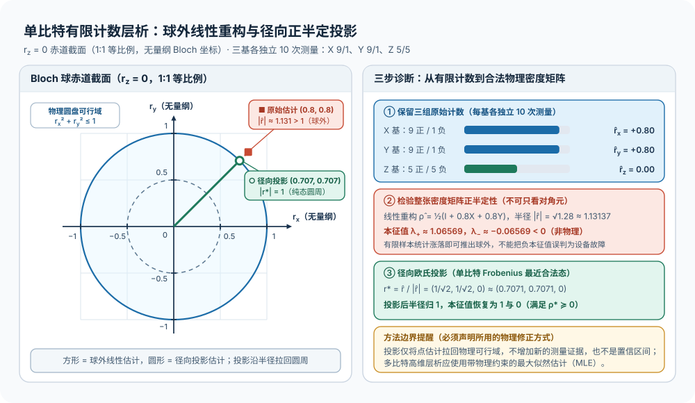

02｜单量子比特：状态、相位、旋转与测量
一个经典比特只有两个离散取值： 或 。而一个理想单量子比特的状态，需要用两个复数来记。看起来只是多了几个数字，可真正把它们摆到草稿纸上算一遍，你会看到量子计算里最核心的几件事几乎全部从这里长出来：为什么“同样 50% 得 、50% 得 ”未必是同一个状态？为什么全局相位看不见、相对相位却能决定成败？为什么旋转门矩阵里藏着半角 ，转满一整圈 反倒会冒出一个负号？一次测量除了给出概率，还会怎样改写量子态？当真实的测量次数有限、探测器还会读错标签时，我们又怎么把状态稳妥地还原出来？
为了让你一路算下来有“摸得着”的手感，本章选定一个贯穿始终的标杆态：
它既有不相等的振幅大小，又带着虚数单位 引入的相对相位。后面从复数模平方、Bloch 球坐标、 三轴测量、前置换基门次序，到单比特态层析与读出校准，我们都会反复拿它亲手算一遍，让每一个抽象概念都能对照到同一组具体数字。
读本章只需先掌握第 01 章：零基础数学工具里的复数模平方、二维列向量和 矩阵乘法。如果你想先从双缝干涉、分束器、Stern–Gerlach 与光子偏振建立物理直觉，可以先看量子力学 Q1：从实验认识量子态；读完本章后，量子力学 Q2会把这里的门矩阵与物理可观测量、哈密顿量和时间演化接通，第 03 章再迈向多比特与纠缠。文中标有“进阶回看”或“进阶选读”的小节，第一遍阅读时可以先跳过，等你熟悉了主干再回来细算。
1. 量子态不是一枚藏起来的经典硬币
1.1 计算基、复振幅与归一化
先在二维复向量空间 里固定两个正交归一的标准列向量：
它们叫作计算基（computational basis）。这里的 和 首先是两个可以完全区分的基准状态标签——比如超导芯片里的最低能级与第一激发态，或者光子偏振的水平与竖直方向——并不是说量子比特在被测量之前，心里已经偷偷选好了 或 藏在盒子里。
把这两个基态分别乘上复数 再相加，就得到一个单量子比特的纯态（pure state）：
这里的复数 和 称为振幅（amplitude）。它们满足的约束 叫归一化条件，其中 是复数 的模平方。纯态描述的是理想制备下、拥有完整相干信息的单量子比特状态；至于“按经典概率随机挑一个态制备”或者“做完测量却丢了记录”的情况，后面会引入密度矩阵来描述混态（mixed state）。
怎样把这两个复数和实验计数联系起来？量子力学给出了一条独立的物理输入——Born 规则（它无法仅从列向量加法推导出来，而是由实验确立的测量规律）：
当单量子比特处于归一化纯态 时，在计算基 上做一次理想测量，报告结果 的概率为
报告结果 的概率为
归一化条件 恰好保证了两个互斥结果的概率之和 。
拿我们的标杆态 亲手算一次：
是实数，共轭仍是 ，所以
是纯虚数，共轭为 ，所以
检验总概率：，完全合法。注意初学者常犯的计算失误：算概率必须先取复共轭再相乘，不要直接把复数平方，否则会误算出 这种非物理结果。
顺手小检验：给定 ，它归一化了吗？算一下：，已经归一化；在计算基测量，得到 的概率是 ，得到 的概率是 。
1.2 同样的计算基概率，为什么不是同一个状态？
很多人刚学到叠加态时，会问一个自然的问题：标杆态 在计算基下得到 和 的概率是 与 ，那它和“实验员暗中按 概率送出 、 概率送出 的不均匀硬币”有什么区别？
如果只允许在计算基 测量，两者的统计分布完全一样；但量子力学允许我们换一套正交归一基去检验。引入 基的两个正交归一态 、，比较两种制备在 基测得 的概率：
纯态叠加 ：取左矢 （注意复共轭），算得
经典偏置混合（ 送 、 送 ）：因为 ，按经典先验加权平均得
同样地，对量子力学 Q1 第 5 节对照过的等权情形——纯态 与“抛均匀硬币等概率制备 或 ”——两者在计算基均为 ，换到 基 （其中 ）测量时，前者因 必得 （概率 ），后者因 仍为 。
| 制备方式 | 计算基测得 的概率 | 特征换基测量概率 | 状态类型 |
|---|---|---|---|
| 标杆纯态 | 基得 ： | 纯态（保留相对相位 ） | |
| 经典偏置混合 | 基得 ： | 经典混合态（无相干相位） | |
| 均匀叠加态 | 基得 ： | 纯态（相对相位 ） | |
| 均匀硬币等概率混合 | 基得 ： | 经典混合态（无相干相位） |
这张表清楚划开了量子叠加与经典无知的边界：纯态的分量之间保留着确定的相对相位，换基时两路振幅会相干干涉；当然，实验上需要重复测量许多份同源样本才能从统计上区分两者，单次测量无法百分之百识别未知来源。
2. 全局相位与相对相位：哪种相位能被看见？
一个非零复数可以写成极坐标 ，其中 是长度， 是辐角（相位）。既然概率只取振幅的模平方 ，那相位角是不是根本没用？答案正好切在正中间：整体共有的相位看不见，分量之间的相位差看得见。
2.1 全局相位：整体乘上 不改变任何物理预测
把整个态矢量的每一个分量同时乘上同一个单位复数 （，）：
这个共同因子 称为全局相位（global phase）。现在检验它对任意测量方向 （）的概率会产生什么影响：
拿具体数字试一下：令 （即 ）。不论你用什么线性门 继续演化，线性性都会把共同因子 原封不动带到输出 ，最后取模平方时 依然彻底消掉它。因此，对一个孤立的单量子比特而言， 与 代表同一个物理纯态。
这里顺手埋一个重要伏笔：上面的结论要求 乘在整个系统的所有分支上。如果某个相位因子只乘在多比特受控操作或干涉仪的其中一条分支上，它相对于另一条分支就变成了可观测的相位差——第 5.3 节里，我们会用受控 旋转亲手把这个现象算出来。
2.2 相对相位与干涉：怎样把看不见的符号变成确定的 或
回看 与 。两个态在计算基下的概率都是 ，区别只在 前面多了一个因子 ，而 前面没有乘它。这种只存在于分量之间的相位差，称为相对相位（relative phase）。
要让相对相位在计算基里显形，最经典的做法是施加 Hadamard 门 （第 00 章第 2.3 节与第 01 章第 4.2 节已验证 且 ）。因此 （两路 振幅同号相长、 振幅异号相消），而 （相长与相消的角色恰好互换）：原本在计算基下看不出的符号差别，经一次 门即转为确定的 或 。
推广到一般相对相位 ：从 出发，先做一次 得到 ，再给 分支乘上相位 得到 ，最后再做一次 。展开两项：
用欧拉公式 计算测得 的概率：
随着相对相位 从 转到 ，测得 的概率沿着余弦平方曲线从 平滑跌到 （当 时，）。如果你想用耳朵直观感受“先相加振幅再平方”带来的增强、衰减与完全抵消，可以打开本书的合成音频体验听一听相位差为 、 和 的三段波形对照——那些 WAV 文件是用经典正弦波按相同数学规律合成的教学听觉映射，帮你建立干涉的直觉，并不是量子芯片的真实录音。
3. Bloch 球：把单量子比特画成三维球面
计算基概率 和 只记录了两个振幅的大小，却丢掉了它们之间的相对相位。有没有办法用一张立体几何图，把任意单量子比特纯态的大小和相对相位同时画出来？这就是量子计算里最常用的几何地图——Bloch 球（Bloch sphere）。
3.1 从四个实数到两个球面角：半角 从何而来
先数一数一个一般纯态 到底有多少个独立自由度。把两个复数各自写成极坐标：
最初这里有 4 个实数 。两条物理约束会逐一消掉其中两个：
归一化消去 1 维： 且 。满足平方和为 的一对非负实数，可以唯一写成某个锐角（或直角、零角）的余弦和正弦。我们特意把这个角记为 ，令
因为 ，所以 且 自动满足。
去掉全局相位再消去 1 维：当 时，把整体因子 提出来并舍去（它不改变任何测量统计），令相对相位 ，就得到单量子比特纯态的标准球面参数化：
检查两个极点的边界情形：若 ，则 ，态就是 ；若 ，则 ，态就是 ，去掉全局相位后仍只是同一个物理态 。就像地球的北极和南极没有唯一经度一样，在 与 处， 可以任取，并不代表无穷多个不同的态。
剩下的两个角 恰好是一个三维单位球面 上的极角（从北极往下量的余纬度）与方位角（经度），对应三维实单位向量——Bloch 向量：
为什么公式里偏偏要写半角 ，而不是直接写 ？ 答案藏在“正交态的对跖几何”里（也正好接上 Q1 第 4.3 节自旋- 正交态差 的伏笔）。在二维复向量空间 里， 和 彼此正交，向量夹角是 （）；可是画到 Bloch 球上时， 占领北极 ， 占领南极 ，它们成了穿过球心的一对对跖点，三维夹角拉大成了整整 （）！
这种“夹角翻倍”对任意一对正交态都成立： 在 、 在 ； 在 、 在 。更一般地，记任意两个纯态 、 对应的两个三维单位 Bloch 向量 与 之间的三维空间夹角为 （注意 是三维夹角 ，并不是极角之差 ——例如赤道上的 与 极角差为 ，但三维夹角为 ），它们的态重叠概率满足精确恒等式（我们将在第 4.2 节给出完整的三行推导并代入数字验算）：
检验两个极端情形：当两态重合时 ，重叠概率为 ；当两态正交时重叠概率为 ，必有 ，即球面夹角 （对跖点）。这正是半角 出现的最本质几何原因。
3.2 六个轴点、图示与布居/相干的几何含义
把坐标轴的六个端点整理成速查表。这里引入 基的两个态：
| 球面位置 | 极角与方位角 | Bloch 坐标 | 对应纯态 | 沿该轴测量的确定读数 |
|---|---|---|---|---|
| 北极 | ||||
| 南极 | ||||
| 赤道 | ||||
| 赤道 | ||||
| 赤道 | ||||
| 赤道 |
对照下图把这六个轴点记牢。需要记住一条直觉边界：Bloch 球的三个坐标 是无量纲的统计期望值，不是粒子在三维物理空间里的 位置，球上的箭头也不是一颗在实验室里旋转的小钢珠。
 放大查看 ↗
放大查看 ↗（可打开原尺寸 Bloch 球图清晰查看全部标签。）
用 和 对照验证一次：在 里两个振幅都是正实数 ，对应 、，代入坐标公式得 ；换成 时， 前多出一个负号 ，所以 仍是 （仍在赤道上，意味着计算基概率依然各占一半），但经度 转了 到达对跖点 。
细心的读者会问：既然球面 已经装下了所有单比特纯态，那空心球体里面（）装的是什么？答案是单比特混态！如果用 密度矩阵 描述一般单比特状态，把三个 Pauli 矩阵合写为 （Pauli 矩阵 将在紧接着的第 4.1 节正式写出并验证其正交分解性质），任意合法单比特态都可以写成
把一般纯态 的外积密度矩阵 逐格展开，并与上式并排对照，密度矩阵的四个元素立刻拥有了清晰的几何画面：
| 密度矩阵元素 | 物理名称 | 用 Bloch 坐标与球面角表示 | Bloch 球几何意义 |
|---|---|---|---|
| 对角元 | 布居（population） | （纯态为 ） | 由纬度 控制，决定计算基测量概率 |
| 非对角元 | 相干项（coherence） | （纯态为 ） | 模长 是赤道投影半径的一半；辐角即经度 |
这张对照表能直接对应全书后面反复出现的噪声几何：
- 球面 ：纯态（相干项模长达到给定纬度下的最大值 ，如 在 ）。
- 球内 ：部分混合态（例如纯退相位噪声只把非对角相干元按比例压小，几何上就是把 Bloch 向量水平拉向 轴，保持纬度 不变而缩短赤道投影）。
- 球心 ：最大混合态 ——这正是第 1.2 节里“抛均匀硬币随机制备 或 ”的状态！虽然它和球面上的 在 轴投影高度相同（，即计算基概率都是 50/50），但一个躺在球心（非对角相干元为 ），一个站在赤道表面（非对角相干元为 ），几何位置泾渭分明。
为什么合法单比特密度矩阵恰好填满整个实心单位球、而一旦跑到球外 就必然出现非物理的负本征值？我们将在第 05 章：混态、噪声与量子信道给出 与 的完整充要推导。
最后交代 Bloch 球的适用范围：它只能完整表示单个量子比特。当两个量子比特处于可分乘积态时，可以各自画一颗小球；可一旦进入第 03 章的纠缠态（如 Bell 态），两个单比特各自的局部 Bloch 向量都会缩回球心 ，真正关键的联合关联并不住在这两颗独立小球里。
4. Pauli 门、Hadamard 门与从振幅计算 Bloch 坐标
如果说列向量 是单量子比特的状态，那么单量子比特门就是作用在列向量上的 复矩阵 。为了保证任何归一化输入态经过门之后总概率依然等于 ，理想量子门必须是酉矩阵（unitary matrix），满足
其中 表示对 取共轭转置。全书统一采用以下时间顺序约定：画量子线路图时，时间从左向右流逝；写矩阵乘法时，最靠右的矩阵最先作用在列向量上。 也就是说，先施加门 、再施加门 ，写成矩阵乘积是
4.1 四个最基本的单比特门： 与 Pauli 基分解
在计算基 下，三个 Pauli 矩阵 （也常写作 ，并约定 ）与 Hadamard 门 定义为：
这四个矩阵有一个共同的好性质：它们既是酉矩阵（），又是厄米矩阵（），因此各自平方都等于单位矩阵：（连续施加两次等于什么都没做）。它们各自扮演的角色十分鲜明：
门（比特翻转门）：把 翻成 、把 翻成 ，相当于经典计算里的“非门（NOT）”。在 Bloch 球上，它绕 轴旋转 （上下颠倒南北极）。
门（相位翻转门）：保持 不变，给 添一个负号（），所以 、。在 Bloch 球上，它绕 轴旋转 。
门（比特加相位翻转）：把 映到 、把 映到 。用矩阵乘法逐格核对 与 ，并乘上 验证 （注意循环顺序，不要误记成 ）：
三个 Pauli 矩阵遵循整洁的循环乘法律与反对易律：
门（换基门）：把 基与 基互换（第 01 章第 4.2 节已由列视角直接读出 、，且 ）。
再算一个在量子电路里反复出现的恒等式： 等于什么？从右向左先乘 ：
再左乘 ：
用它作用在 上：。中间的 门只翻了一下相对相位（计算基概率始终是 50/50），可被前后两个 夹住后，整体效果就等价于一个实打实的比特翻转门 ！在 Bloch 球上， 对应绕 轴与 轴平分线 旋转 ，它把 轴和 轴互换（、），同时把 轴反向（）。
Pauli 正交基与单比特密度矩阵展开：由第 01 章第 5.6 节已验算的迹正交关系 （），任意 厄米矩阵都可唯一展开为 ，其中 。将其用于满足 的单比特密度矩阵 ，立得 、——这正是第 3.2 节 的代数根源。
4.2 完整算例：从振幅算 Bloch 坐标、兑现态重叠公式与各轴概率
第 3 节提到，Bloch 坐标 其实是 三种测量的期望值（expectation value）。因为每次沿 或 测量只可能读出 或 ，多次重复的平均读数就是 ；在矩阵语言里，纯态 对厄米矩阵 的期望值由夹心乘积 给出。
对一般纯态 ，它的共轭转置行向量（bra）是 。先把三个 Pauli 矩阵分别作用在列向量上：
再用 行向量 从左边逐项相乘：
顺手验算第 3.1 节的球面公式：把 、 代进去，立刻得到
于是 、，而由二倍角公式 ——与第 3.1 节的球面坐标完全吻合！
兑现第 3.1 节的承诺：态重叠公式的三行推导
现在手握 Pauli 迹正交关系，我们可以直接证明第 3.1 节写出的态重叠公式。设任意两个归一化纯态 的密度矩阵为 （）。一方面，由外积与迹的循环性：
另一方面，把两个 Pauli 展开相乘并代入 、、：
其中 是单位向量 与 之间的三维空间夹角。立拿赤道上的 （）与 （）做个快检：两者极角都是 （），但点积 （三维夹角 ），所以重叠概率为 。
标杆态三路径交叉核验
现在代入我们的标杆态 ，一步步算全：
求交叉项：，，所以
读出三个 Bloch 坐标：
所以标杆态的 Bloch 向量是 。检验长度：，稳稳落在单位球面上（对应 ）。
用独立路径交叉核对 测量概率：
路径一（从 Bloch 坐标与重叠公式直读）：记 测量得 、 的概率为 。由 与 ，或者直接把 与 代入刚刚证出的重叠公式（点积 ，三维夹角 ），立即得
路径二（直接算内积模平方）： 的本征态是 。写它的共轭行向量（左矢）时，务必把 共轭成 ，得 。于是
取模平方：
两条独立路径算出的精确根式一模一样。假如在路径二里忘了给左矢分量取复共轭，误写成 ，就会把分子算成 ，概率错成 ——这正好提醒我们，复内积里的共轭一步都不能省。
5. 旋转门、相位门 与任意单比特门分解
前面介绍的 都是固定角度的“整步翻转”门（在 Bloch 球上各转 ）。如果想把状态平滑地转过任意角度——比如从 转出标杆态 ——就需要连续参数的旋转门（rotation gate）。
5.1 绕坐标轴旋转：、、 与半角几何
绕 Bloch 球 三个坐标轴逆时针旋转角度 （单位：弧度，遵循右手定则）的标准单比特旋转门，在计算基 下的 矩阵依次为：
三个矩阵各自都可以按行手算，立刻看到它们在 Bloch 球上做了什么：
绕 轴旋转 （实矩阵，负责改变极角 ）： 作用在 上，就是取出矩阵第一列：
取 时，两振幅均为 ，输出正好是 ；取 时，，输出是 。把 代回第 4.2 节的坐标公式，得
虽然矩阵里写的是半角 ，但 Bloch 向量确实从北极 绕 轴严格转过了整角 ！
绕 轴旋转 ： 取 作用在 上：
它的 Bloch 坐标是 ——右手大拇指指向 轴，四指弯曲方向正好把 轴推向 轴，方向完全吻合。
绕 轴旋转 （对角矩阵，只改方位角 ，不改计算基概率）： 对 逐行相乘：
提出来的 是不改变测量统计的全局相位；括号里 相对 多出来的 把 Bloch 向量沿着赤道绕 轴逆时针转过角度 。特别地， 与 是同一物理态， 与 是同一物理态。因为两个对角元模长都是 ， 永远不改变计算基下的测量概率。
简记预告：借助第 01 章的矩阵指数，上面三个旋转门还可以统一简写为 、、，一般地绕任意三维单位轴 旋转角度 记作 。这套记号的严格展开和几何证明，我们在紧接着的 §5.3 一步步推导。
5.2 相位门 与 ，以及常用单比特门速查表
在量子电路和容错纠错里，有两个绕 轴旋转的特殊固定角度门出场频率极高，它们被称为 相位门 （phase gate，转 ）与 门（ 门，转 ）。在计算基 下，它们的正式定义是：
核对全局相位换算只需把指数乘进对角线：
它们的逆门（共轭转置）同样是对角矩阵：、。逐项相乘即可验证递进关系：
下面这张对照图把第 5.1 节的“态空间半角 对比 Bloch 球面整角 ”旋转几何（含转满 时冒出负号），以及刚刚定义的 赤道相位门递进关系定格在同一画面里：
 放大查看 ↗
放大查看 ↗（可打开原尺寸旋转半角几何图细看角度标注与轨迹。）
有了 和 ，我们立刻就能写出制备本章标杆态 的两步线路——从 出发，先做 ，再做 ：
第 8 节做态层析时，实验电路制备目标态用的正是这条 线路。
把全书最常用的 9 个单量子比特门汇总到一张速查表里，方便随时翻阅（表中第三列的矩阵指数与任意轴记号 紧接在 §5.3 推导；到了第 04 章，我们还会进一步说明为什么 属于可用经典计算机高效模拟的 Clifford 门，而加上非 Clifford 的 门就能逼近任意量子计算）：
| 门 | 矩阵（计算基 ） | 与旋转门的关系（至多差全局相位） | Bloch 球几何作用 | 常用代数性质 |
|---|---|---|---|---|
| 绕 轴转 | 比特翻转， | |||
| 绕 轴转 | ， | |||
| 绕 轴转 | 相位翻转， | |||
| 绕 平分轴转 | 互换 ， | |||
| 绕 轴转 | Clifford 相位门， | |||
| 绕 轴转 | 非 Clifford 门， | |||
| 绕 轴转 | ||||
| 绕 轴转 | 实矩阵，改变极角 | |||
| 绕 轴转 | 改方位角，不改 基概率 |
5.3 进阶回看：矩阵指数、 双重覆盖与 负号
1. 绕任意单位轴 的统一旋转公式
取三维实单位向量 （），定义厄米矩阵 。利用 Pauli 矩阵的乘法规则 以及反对易关系 ，把 乘开，所有交叉项两两抵消：
绕轴 旋转角度 的旋转门由矩阵指数定义为 。注意矩阵指数不是把矩阵里每个元素分别取普通指数，而是按幂级数定义 。因为 ，所有偶数次幂都是 、所有奇数次幂都是 ，把级数拆成偶项和奇项立刻得到闭合公式：
顺手拿 轴（）验算一次：令 ，
与第 5.1 节的矩阵逐格相同。
2. 共轭推导： 的 2 对 1 双重覆盖
当旋转门 作用在单比特态 上时，密度矩阵变为 。为什么矩阵里的半角 经过左右夹心共轭，会严丝合缝地变成 Bloch 球上的整角 三维旋转？下面分三步一格不跳地算出来：
第一步：先拿最具体的 亲手共轭 。 记 ，则 、。由反对易 可知，把 从左侧推过 时 会翻号，即 。代入共轭夹心：
其中倒数第二步用到了 与二倍角恒等式 ！完全同理，由 与 ：
而 与 对易，故 。把三条结果合并代入 ：
这里 恰好就是三维欧氏空间绕 轴逆时针旋转整角 的标准正交矩阵！半角 之所以变成整角 ，正是因为左乘一次 、右乘一次 后，对反对易分量合出了平方项 。
第二步：四行推广到任意轴 的 Rodrigues 旋转公式。 把 Pauli 乘法 与 （循环）写进统一指标恒等式 （其中 ， 为 Kronecker 符号； 是三维 Levi-Civita 完全反对称符号：当 为 的偶置换 时取 ，为奇置换 时取 ，有任意两个指标重复时取 ）。对任意两个三维实向量 展开逐项相乘，按点积 与叉积分量 归并，得到 Pauli 矢量积恒等式：
把 Bloch 向量 拆成平行于转轴 与垂直于 的两部分：，其中 、 且 。
- 平行分量： 是 的实数倍，与 对易，共轭后原封不动保留 ；
- 垂直分量：因为 ，由 Pauli 矢量积恒等式有 ，两者严格反对易！照搬第一步的平方二倍角展开（并利用 ）：
把平行与垂直两支加回一起，读出系数即精确导出三维几何里的 Rodrigues 旋转公式：
第三步：核验 2 对 1 映射核 。 特殊酉群 由所有满足 且 的 复矩阵组成（每个 的行列式都是 ）。对任意 ，把 换成 代入共轭夹心：
反之，若某个 令所有三维向量 保持不变（即 对 均成立），则 与全部 Pauli 矩阵对易，只能是单位阵的标量倍 ；再由 ，唯一解就是 。因此，映射到三维旋转群 时，恒等旋转的原像（映射核）精确为 ： 中互为相反数的一对矩阵 与 （例如 与 ）精确对应同一个三维旋转，数学上称为 2 对 1 双重覆盖（double cover）。
3. 算例：转满 得到的负号 ，真的永远不可测吗？
把 代入 ：、，于是
Bloch 球上的箭头转了一整圈 已经回到原位，可矩阵却翻出了一个负号 ，必须转满 才回到 ！对于一个孤立单量子比特， 只是一个看不见的全局相位。但不要因此以为“ 在任何线路里都等同于什么都不做”。
考虑一个最简单的两比特实验（沿用全书高位在左的大端序 ）：控制比特 制备在 ，目标比特 处在任意归一化纯态 。现在施加一个受控 门：当控制位为 时目标位什么都不做（施 ）；当控制位为 时对目标位施加 。逐支展开：
目标比特 依然原封不动，可控制比特 却从 变成了正交的 ！再对控制比特做一次 门：
- 如果目标上挂的是受控 （真正什么都不做），，测控制位以 100% 概率得 ；
- 如果目标上挂的是受控 ，，测控制位以 100% 概率得 ！
一条受控分支上的 变成了跨分支的相对相位，进而转化成确定性的实验差异。这一现象正是第 04 章里相位回踢（phase kickback）的原型，也在硬件编译中提醒我们：把两个只差全局相位的单比特门（例如 与 ）放进受控门里时，绝不能随意互换。
4. 几何相位（Berry / Pancharatnam 相位）：Bloch 球立体角
上面的 负号并不是偶然。设想让单量子比特的纯态沿着 Bloch 球面走完一条闭合回路 再回到出发点：从物理上看，Bloch 向量回到了原点，但态矢量除了随时间演化积累的动力学相位之外，还会额外带回一个只取决于回路在球面上所围面积（立体角 ）的相位因子——这就是几何相位（连续绝热情形称 Berry 相位，Berry 1984；离散测地折线情形称 Pancharatnam 相位，Pancharatnam 1956）：
这里的 是闭合回路 在单位 Bloch 球面上所围的定向立体角（沿回路逆时针绕行、使所围区域在左侧时取正号；反向绕行则反号）。立刻拿刚才的赤道一圈检验：一条沿赤道逆时针绕满 的大圆恰好围住整个北半球，立体角 ，代入公式得 ，相位因子 ——这正好从几何角度解释了 ！
不用微积分，也能用离散 Bargmann 不变量把任意测地多边形回路的几何相位一格不跳地算出来。对球面上依次连接的 个纯态 （相邻两态非正交，用大圆弧连接），定义循环内积 ，其辐角 就是这条闭合测地折线的几何相位（注意若把任一顶点态改乘任意相位 ，由于 与 成对出现，因子 自动抵消，因此 与各顶点的全局相位选取无关）。
手算一例（八分之一球面三角形）：让纯态沿三条大圆弧走过北极 、赤道 与赤道 再回到北极：。这条三角形恰好围住单位球第一卦限（总球面积 的 ），立体角为 ，理论预言几何相位为 。现在直接按左共轭内积逐项计算 Bargmann 不变量：
- ；
- ；
- 。
三项相乘：
直接读出辐角 ，与立体角公式精确一致！（若将绕行方向反过来走 ，内积取复共轭，几何相位立即翻号为 。）
最后划清三类相位的边界：孤立全局相位是静态整体因子，不可观测；动力学相位取决于哈密顿量能级与演化时长（见量子力学 Q2 第 5.4 节）；几何相位只取决于态空间回路的几何立体角，对沿途速率的轻微抖动天然不敏感，只要把回路放进干涉臂或受控分支就能直接测出——这一特性也是第 09 章几何量子门与第 17 章绝热量子计算的物理基础之一。
5.4 进阶回看：单比特通用欧拉分解（ZYZ 证明与 XYX/ZXZ 对照）
面对无穷多种可能的 酉矩阵，量子芯片不可能为每一种门都单独设计硬件脉冲。好在有一条极为实用的结构定理——ZYZ 欧拉分解定理（Nielsen & Chuang §4.2）：
对任意单比特酉矩阵 ，总存在四个实角 与 ，使得
（记号说明：本章与第 14 章 §2.1统一采用“全局相位记作 、三次转角依次记作 ”的字母顺序；Nielsen & Chuang 原书将这四个字母循环改写为 ，含义完全相同。）
几何直觉就像拨动地球仪：无论你想把地球仪转到哪个朝向，都只需先绕南北极转一下经度（），再绕东西水平轴把目标点仰起或压低到合适纬度（），最后再绕南北极微调一次方位（）。
6 行构造性证明
先展开右端目标形态：直接把三个 矩阵从右向左乘开，得
用酉性参数化第一列：任取 。由 ，第一列满足 ，故存在唯一 （保证 ）以及实相位 ，使 、。
用两列正交与第二列归一锁定后两格：由 与正交条件 ，两格模长必满足 、；当 时写成 、，代入正交条件得 ，即相位必满足
直接解出四个实角并逐格回验：令
核对全部四格相位：
- 格：；
- 格：；
- 格：；
- 格：。四格全部精确还原！
检查两个万向节退化边界：当 时，（只需固定 ，可设 ）；当 时，（只需固定 ，同样可设 ）。证毕！
拿 Hadamard 门 亲手验算一次：取 、、、。逐步乘开：
再乘上全局相位 ，因为 ，立刻精确还原出 ！
XYX 与 ZXZ 欧拉分解对照
只要给 ZYZ 分解两边套一层固定单比特共轭，两行就能派生出另外两种硬件极常用的欧拉分解：
XYX 分解：把任意 先共轭成 并对 做 ZYZ 分解：。两边再共轭乘 ，利用 、（由 ）以及 （由 ），立刻得
重记 即得统一的 形式。
ZXZ 分解：由 （可逐格核对 ）可得 且 。对 做 ZYZ 分解再两边共轭 ，立即得
例如 Hadamard 门在 ZXZ 下写成对称的 。
把三种通用单比特分解收进一张对照表：
| 分解形式 | 通用表达式 | 由 ZYZ 推出的共轭桥梁 | 硬件编译典型偏好 |
|---|---|---|---|
| ZYZ | 本节 6 行构造直接证明 | 超导虚拟 相位帧（ 近零耗时，配合 或双 脉冲，见第 14 章） | |
| ZXZ | 超导/硅自旋常见原生门集（ 微波脉冲 + 虚拟 ） | ||
| XYX | 离子阱、中性原子双正交相位微波/拉曼直驱 |
在真实超导硬件上，第 14 章 §2.1会进一步展示怎样用几乎零耗时的“虚拟 相位帧更新”配合至多两个固定角度的 微波脉冲，把任意单比特门编译成高效物理波形。
6. 投影测量（PVM）、Born 规则与测量后状态
第 1 节我们只说了计算基测量的结果概率。实际实验里，测量至少同时涉及两个彼此独立的问题：得到某个结果的概率有多大？ 以及 测完之后，这个量子比特变成了什么状态？ 在理想投影测量（projective measurement，常缩写为 PVM）模型里，我们把这两种问题拆开，拿标杆态 完整演练一遍。
6.1 已知结果：概率与条件后态
计算基对应的两个投影算符（projector）是外积矩阵：
它们的作用非常直观： 保留列向量的第一行、把第二行清零； 保留第二行、把第一行清零。把它们分别乘到标杆态 上：
请注意这两个输出列向量此时尚未归一化，而它们各自的长度平方恰好就是对应结果的出现概率：
如果你亲眼看到了测量记录，那么对应结果的条件后态（post-measurement conditional state）就是把该未归一化向量除以它自己的长度 ：
若测得结果 ：
若测得结果 ：
由于 只是全局相位，它与 表示同一个物理纯态。
初学者容易把“概率 ”和“条件后态 ”混成一团，甚至写出 当作测后态。要牢记：概率回答“这一分支发生有多频繁”，条件后态回答“既然已经知道它发生了，接下来继续操作时系统处在什么归一化态”。
6.2 丢弃或未记录结果：为什么不能随便挑一个分支
现在换一种信息情境：测量仪器确实工作了，但显示屏坏了，或者实验脚本忘了把测量结果存盘。这时我们不能凭空假装结果是 ，也不能把 和 像纯态一样加回列向量，而必须用 密度矩阵（density matrix）按各自发生概率做经典混合。
先写出测量前输入纯态 的密度矩阵 （列向量乘共轭行向量，结果是 矩阵）：
做完计算基投影测量并丢弃结果后，系统以概率 处于 、以概率 处于 ，因此非选择后态（non-selective post-measurement state）是
把 和 摆在一起对比：两个对角元完全相同（ 和 ），说明再次做计算基测量时统计分布不变；但原来藏在非对角线上的相干项 被彻底抹成了 ！这就清楚地区分了两件完全不同的物理事实：做了测量却不看结果（相干性已被破坏，变为 ），与根本没有测量（相干性完好保留，仍是 ）。
6.3 换基测量： 基与 基（为什么前置门次序绝不能写反）
1. 在 基测量
问一个量子比特在 基 下的结果，不是把计算基里的“”随手改名成“”，而是真正换一套投影方向 、。继续用标杆态 逐项展开：
检查总概率：，而且与第 4.2 节算出的 一致。若记下结果 ，理想 投影测量后的条件态是 ；若记下 ，条件态是 ；若丢弃记录，非选择后态为
在真实量子处理器上，硬件探测器通常只原生支持计算基（ 基）读出。要想测 基，工程上会在计算基读出前先施加一个 门：因为 、，读出 0 就对应原本的 ，读出 1 就对应原本的 。不过要留意测后态的区别：只做“ 后接计算基测量”留下的物理后态是 或 ；若后续电路还需要真正停在 的理想 投影后态，读出之后必须再补做一次 把坐标系换回来。
2. 在 基测量：前置门必须先 后 ，写反就会静默算错
同理，如果硬件只支持计算基读出，怎么把 基 映射到 ？我们需要一个酉变换 ，满足 且 。分两步看最清楚：
第一步先用 消除虚数单位 ：
同理 。
第二步再施加 把 映到 ：
按“电路从左向右、矩阵从右向左”的规则，线路顺序是先 、再 、最后测计算基，总前置矩阵是 。现在拿标杆态 对比正确次序与反序的结果：
正确次序（先 ，再 ）： 先算 ；再乘 ：
计算基测得
0（即 ）的概率为与第 4.2 节两种独立方法算出的结果分毫不差！
常见写反错误（先 ，再 ，矩阵写成 ）： 先算 ；再乘对角矩阵 ：
因为 放在测量前的最后一步只改相位不改振幅模长，所以测得
0和1的概率变成了
这个反例极具教学警示意义：把 和 写反以后，程序照样不报错，输出的两个概率之和也稳稳等于 ，却把真正的 静默算成了 ！编写量子电路测试时，检查“概率归一化”远远不够，必须拿带复相位的标杆态对着解析概率逐项核验。
6.4 投影测量通式与理想模型的现实边界
把上面的例子写成一般投影测量的统一公式。若一组 投影矩阵 满足厄米性 、正交幂等性 以及完备性 ，则对纯态 ：
其中第一个等号用到了 。若测量已执行但结果未被记录，对一般输入密度矩阵 ，非选择后态统一写作
这套理想投影模型在纸面上干净利落，但走入真实实验室后需要留心三点差距：第一，物理探测器直接输出的是微弱电压、光子计数或电荷脉冲，再经阈值判决报出 0 或 1，有限信噪比会造成标签误判；第二，物理读出过程本身可能诱发能级跃迁、向高能级泄漏，或者像单光子探测器那样直接把光子吸收销毁；第三，只有近似满足量子非破坏（quantum non-demolition，简称 QND）条件的读出，立即重测才会高概率重复原结果，并非所有硬件读出都自带 QND 性质。为了精确刻画这些更广泛的真实测量，我们来看下一节的广义测量框架。
7. 进阶回看：一般测量（POVM）、Naimark 扩张与量子仪器
在理想投影测量里，一个 维的单量子比特最多只有 2 个互斥的正交投影结果，而且结果概率和测后态绑定在同一组投影矩阵 里。可现实里常常出现两类需求：一是读出过程存在模糊与误判，或者我们干脆想设计超过 2 个结果的测量；二是我们想知道“同一种统计读出，背后究竟可能带来哪些截然不同的测后状态”。这就把测量模型自然拆成了三层：

7.1 一般 POVM：从模糊读出、三态对称测量（Trine）到无错判别（USD）
如果我们只关心每种测量结果 出现的概率 （比如算法最后一步测完就丢弃量子比特），可以把正交投影放宽为一族正算符值测量（positive operator-valued measure，缩写 POVM）。具体定义：在 维空间上，只要一组矩阵 （称为 POVM 元素或效果算符，结果个数可以大于维度 ）满足
那么对任意输入密度矩阵 （纯态时 ），获得结果 的概率为
正半定性保证每个 ，完备性 保证总概率 。
例 1：带错判的二元非投影 POVM
看一对最简单的对角 POVM 元素：
核对条件：两个矩阵的对角本征值都是 （正半定），且 。但 ，说明它们不是投影矩阵。输入 时，报告 0 的概率是 ，报告 1 的概率是 ——这恰如一台有 对称误判率的探测器。只看这两个 ，我们完全能算出任意输入的读出概率，却还无法判断测完后量子比特处于什么状态。
例 2：实系数三态对称 Trine POVM——二维空间里严格击败任意投影测量
先看困惑：假设 Alice 等概率（各 ）地从下面三个对称分布于 Bloch 球 平面内的实系数纯态中挑一个发给 Bob：
先算清它们的几何位置与两两重叠。代入第 4.2 节坐标公式 ，三个 Bloch 向量分别是
三支单位向量在 大圆上两两互成 （），矢量和严格归零：；任意两个不同态之间的重叠概率均为 （直接算内积 同样立得 ）。
现在，Bob 想靠单次测量尽量猜中 Alice 到底发了哪一个态。如果用 3 元对称 Trine POVM，令
把三个 矩阵逐格写出来核验正半定性与完备性：
正半定性：每个 都是正数 乘以秩一投影，本征值为 与 ，全部非负。
完备性：逐格把三张矩阵相加——左上格 ，反对角格 ，右下格 ，严格得到 （用 Bloch 展开更是一眼看出：）！
平均猜对概率：无论 Alice 发送哪个 ，报出正确标签 的概率为 ，报出另外两个错误标签的概率各为 （和为 ）。因此 Trine POVM 的总成功率为
为什么二维空间里任何 2 结果投影测量（PVM）都打不过它？ 逐步算清上限：二维空间里的任意非平凡投影测量只有两个对跖投影方向 （），因此最多只能把两个输出指派给三个候选标签中的两个（不妨设为输出 猜 0、输出 猜 1、永不猜 2；由三态对称性，任选两个标签上限完全相同）。于是平均猜对概率为
算出差向量的长度：，模长为 。由 Cauchy–Schwarz 不等式 ，任何 2 结果投影测量（以及它们的任意经典随机混合）的成功率都严格封顶在
哪怕只在单比特的二维空间里，3 元对称 POVM 也以 实打实地击败了全部 2 结果投影测量的理论天花板 ！如果把效果算符换成指向对跖方向的“反三态” ，更能做到输入 时结果 的概率严格为 ——单次测量就能以 100% 把握排除三态中的一个错误标签（留作章末 练 02-B 亲手核验）。
例 3：非正交态的三元无错判别（USD-POVM）
先看困惑：现在假设 Alice 等概率地从两个非正交纯态 和 中二选一发给 Bob（它们的内积是 ）。如果 Bob 只能用二维空间里的普通二元投影测量（PVM），无论怎么旋转测量轴，只要想在一次测量里猜出是哪一个态，就必然存在把 错认成 或者把 错认成 的风险。有没有办法设计一种测量，保证只要给出结论就百分之百零误判，代价仅仅是有时坦诚报告“这次无法判定（?）”？
用 3 结果 POVM可以优雅地解决这个问题，这就是著名的无歧义态判别（unambiguous state discrimination，简称 USD）：
构造两个“零误报”结果：
- 结果 1 代表“必为 ”。为了保证输入 时绝不触发结果 1，必须让 ，因此取与 正交的投影方向的倍数：（）。
- 结果 2 代表“必为 ”。同理，为了保证输入 时绝不触发结果 2，取与 正交的 的倍数：。
- 结果
?代表“无法判定”，由完备性强制决定：。
求最大合法系数 （确保 ）： 先把 写成显式 矩阵：
算矩阵 的特征多项式：
用求根公式得两个本征值 。因此 的最大本征值是 。要让 正半定，就必须让 的最大本征值不超过 ：
为了把成功判别率拉到最高，就取临界最大值 。此时 的两个本征值分别是 与 ，确实合法正半定！
逐项核算三种结果的概率：
当输入是 时：
当输入是 时：
结果一目了然：只要仪器亮起 1 或 2（总成功率约 ），Bob 就敢百分之百断定对方发来的是哪一个态，零误判；其余 的时候，仪器输出 ? 表示弃权。这个 恰好触及了等先验二态无歧义判别的理论极限——Ivanovic–Dieks–Peres 界（我们会在第 13 章：量子信息量度把它和允许误判的 Helstrom 界系统比较）。
Naimark 扩张定理：如何用两能级比特实现 3 个结果？
听完三元 POVM，很多人会好奇：一个单量子比特明明只有两个正交状态，实验台怎样才能测出 3 种结果？Naimark 扩张定理（Naimark's dilation theorem）给出了一句非常清透的回答：主系统 上的任何一般 POVM，都可以先给它配上一个处于固定初态 的辅助量子系统 ，在更大的联合空间 上施加一个联合酉门 ，再对联合系统做一次普通的正交投影测量（PVM）来实现！ 比如要实现 3 结果 POVM，只需把单比特和一个三能级（或两比特）辅助系统耦合，再对更大的联合空间做普通投影测量即可。所以 POVM 并不是脱离投影测量之外的神秘新法则，而是把更大系统上的标准投影测量“只盯着子系统 看”的自然结果。
7.2 量子仪器：为什么仅有 POVM 还不足以决定测后态
要把“结果概率”和“测后状态更新”同时写全，需要第三层工具——量子仪器（quantum instrument）：由一组分支映射 （满足 ）刻画，其诱导出 POVM 元素 与概率 。已知结果 时的条件后态为 ，丢弃记录后的非选择后态为 。（三层测量模型的完整对照表以及“同一计算基 POVM 下保留态 vs 测后复位态”的详细手算反例，统一安排在第 05 章第 3.3 节结合噪声信道精讲。）
这里先拿例 1 的非投影 POVM 看一个最直接的弱测量反例：取最温和的平方根实现 、（注意给 左乘任意酉阵 不改 ，却会翻转后态，可见同一 POVM 对应无穷多种仪器）。将 送入该仪器：
条件后态与非选择残余相干：，条件后态 ；对称地 、。丢弃记录后的非选择态为
它只部分削弱了相干性（此时测 的概率仍高达 ）。
重测不一定重复原标签：若第一次测得
0后立即用同一仪器重测，第二次仍报0的概率仅为
因此，“刚测出某标签、立刻重测必得同一标签”只适用于理想正交投影测量，不能直接推广到一般 POVM 或带噪声的弱测量仪器。
8. 有限采样、单比特态层析与读出校准
前面七节里，我们每次算出的概率都是纸面上的精确值。可真正坐到控制台前运行实验时，设备并不会直接打印出 和 ，它只会吐出一串由 0 和 1 组成的原始计数，而且真实探测器还会犯错。这一节讲清从“原始计数”回到“可信量子态”必须跨过的三道关：有限采样波动、态层析的物理约束估计，以及不对称读出校准的仿射偏差与 SPAM 边界。
8.1 采样统计波动不是设备噪声
独立重复测量 次（英文习称 shots）时，样本频率 的统计标准差已由第 01 章第 8.3 节导出为 ，最坏情形（）下 ：取 时约为 ，取 时降至 ——统计误差缩至 必须将采样数增至 倍。即便硬件完全无噪，有限采样波动也必然存在；反之，系统读出偏差或参数漂移无法靠单纯增加 消除，而且 只是典型涨落尺度，并非对每一批误差的绝对硬上限。
8.2 进阶选读：单比特态层析（QST）与物理约束估计
如果我们手里有一个未知的单比特制备装置，想把它的状态完整测出来，就需要做单比特量子态层析（quantum state tomography，缩写 QST）：把大量独立重新制备的相同副本分成三批，分别沿 三轴测量（注意是分三批测不同副本，绝不是对同一个量子比特连续测三次）。用每轴的二值计数估计三个 Bloch 坐标：
再代回线性逆公式重构密度矩阵：
看起来顺理成章，可只要样本数有限，就会撞上一个经典的几何陷阱。
小样本手算例：三组合法计数怎样跑到 Bloch 球外
假设三批各只测 次，某次小样本测试得到三组完全合法的计数： 轴得 为 ， 轴得 ， 轴得 。
算经验 Bloch 向量：
单独看每一维，、、 都老老实实落在 里面；可合起来算模长：
这个估计点已经戳出单位球面之外了！
亲眼看见负本征值： 把 代入线性重构公式：
求它的特征方程：
解得两个本征值：
这个矩阵虽然厄米、迹也为 ，却冒出了一个负本征值 ，意味着沿某个方向预测出“负概率”，不再是合法的物理密度矩阵。


放大查看 ↗上图展示了 的等比例赤道截面（横纵轴均为无量纲 Bloch 坐标）：方形标记是落在单位圆外的原始线性估计 ，圆形标记是拉回圆周后的物理估计。原尺寸图与绘图脚本均可在本地查看。
径向正半定（PSD）投影与大样本边界： 对单比特、迹为 且三轴方差各向同性的情形，把球外向量直接沿径向缩回球面，就能得到闭单位球内欧氏距离最近——等价于密度矩阵 Frobenius 距离（又称 Hilbert–Schmidt 距离，，对单比特恰好等于 Bloch 向量欧氏距离除以 ）最近——的合法状态：
投影后的矩阵本征值恢复为合法的 和 。请注意，即便把每轴采样次数提高到数千次（例如每轴 次对本章标杆态做层析），因为纯态本来就紧贴在球面边界 上，任何轻微的正向统计涨落依然可能把线性估计推出球外（例如 ，出现约 的微小负本征值）。所以球外负本征值绝不是“自然界出现负概率”的证据，而径向投影只适合三轴采样次数与方差各向同性的简单情形。
不等采样反例与 Cholesky 最大似然估计（Cholesky-MLE）
一旦三轴采样次数悬殊（或存在不对称噪声），径向投影就会把高精度轴拉偏。看一个最小反例：设 轴测了 次（得 为 ，经验值 ，采样标准误仅 ），而 轴仅测 次（，）， 轴测 次（，）。此时线性估计模长为 ：
直接径向投影：把三轴等比例缩小得 ——把经过 100 次采样的高可信 硬生生拉偏了 （超过一个标准误），却对仅测 10 次的 让步太少；
物理约束最大似然估计（MLE）：在合法 Bloch 球 内直接最大化观测计数的对数似然函数
数值最优化给出 ——自动按各轴样本量加权，更好地保留高精度 轴信息，主要修正噪声大的 轴。
推广到任意 维多比特层析时，为了在优化过程中自动保证重构矩阵厄米、正半定且迹为 ，工程上通行 Cholesky 参数化（James et al. 2001）：引入下三角矩阵 （单比特含 个实参数， 维含 个实参数），令
则对任何非零 ，都有 、 与 自动成立，将有约束优化转化为无约束参数搜索。
| 层析估计方法 | 保证物理合法性 | 处理不等采样 / 高维 | 局限与注意边界 |
|---|---|---|---|
| 线性逆重构 | 否（可出现负本征值） | 闭式极快，无偏 | 靠近纯态边界时频繁落到球外 |
| 径向 PSD 投影 | 是（单比特） | 仅适合各向同性等权采样 | 忽略各轴样本量差异，易拉偏高精度轴 |
| Cholesky-MLE | 是（任意维度） | 按似然自动加权，工程标准 | 对真纯态常落到零本征值边界，需用自助法或惩罚似然构造置信区间 |
完整的 8192 次采样标杆态计数表与开源 SDK 实跑比对收录在基础实验册与完整 SDK 实验册。
8.3 不对称读出校准、方差传播与 SPAM 边界
进阶选读提示：本节面向硬件读出校准与误差传播分析；首遍学习单比特电路主干时可先浏览结论，待接触实验数据或第 09、14 章时再精读。
真实的超导量子比特在读出脉冲持续期间，激发态 会因能量弛豫（ 衰减）悄悄掉回基态 ，因此“把真 1 错报成 0”的概率常常明显大于“把真 0 错报成 1”的概率。记
沿用全书统一的列随机读出混淆矩阵约定（列表示真实状态，行表示报告结果；部分软件库如 Qiskit Aer 按行存储，输入前需取转置）：
1. 不对称读出对 Pauli 期望的仿射畸变与反演
对任意 Pauli 轴（换基门视为理想时，最终都落回计算基读出），记真实期望为 ，报告期望为 。把 、 代入 ：
再利用 ，立刻得到简洁的仿射关系与反演公式（设对比度缩放因子 ）：
请盯住分子里多出来的偏置项 ：不对称读出不仅把 Bloch 坐标按比例 缩短，还会把整体中心平移 ！ 拿典型参数 、（中心偏置 ，缩放因子 ）代入本章标杆态 立刻一目了然：原本严格为零的 轴期望会漂移到 ，原本为 的 轴期望会畸变成 。如果图省事只除以一个平均“读出保真度”，就会漏掉 偏置，导致校正后的状态依然系统偏斜。
2. 校准方差放大与三变量误差传播入口
做完反演之后，不要把校准过的 当成零误差真值：
- 分母 的方差放大：反演时把原始估计除以 ，会直接把来自目标测量的采样标准误放大 倍（方差放大 倍；上面 时标准误放大约 ，方差放大约 ）。读出越差， 越小，反演后的统计噪声就越剧烈。
- 有限标定不确定度与跨轴协方差：标定矩阵里的 本身也是靠有限次参考测量估计出来的，它们的不确定度会经由一阶误差传播（Delta 方法）并入总方差；当 三轴共用同一份标定矩阵时，三轴误差之间还会产生正协方差。而且直接矩阵求逆遇涨落可能算出负准概率，多比特系统还会面临 矩阵指数膨胀。
关于三变量偏导数方差传播的完整推导、标定与目标样本的最优预算分配，本书统一安排在第 09 章 §5.3精讲；关于单比特与多比特读出缓解（单纯形投影、张量积/马尔可夫模型、无矩阵子空间缓解 M3 与 TREX）的工程实现，见第 14 章 §9；本章标杆态的 16384 次采样标定复算数据与偏导核验收录在基础代码说明与完整 SDK 实验册（基础实验册亦提供勘误摘要与复核指引）。
3. 制备与读出同时出错怎么办？SPAM 不可辨识性与表征入口
状态制备与测量误差合称 SPAM（state preparation and measurement）。前面两列标定实际测到的是“下达制备 0 或 1 的指令后，探测器报告什么”。假如真实的态制备本身也存在混合误差矩阵 ，那标定实验观测到的只是乘积 。于是，“完美制备配上有错读出”与“有错制备配上完美读出”会吐出完全相同的两列计数——单靠制备 并直接读出，数学上不可能把 与 唯一拆开。
因此，上面的读出校准建立在“参考制备与换基门相对可信、读出误差平稳独立”的前提之下。要想在制备、门操作和读出三者同时存在未知误差时做自洽的联合表征，需要借助门集层析（gate set tomography，缩写 GST）或对 SPAM 稳健的随机基准测试（RB）：这两套协议的原理与规范自由度将在第 11 章：资源估算与基准与第 14 章：编译、调度与控制中展开，对应的可运行开源实验流程记录在完整 SDK 实验册。
9. 常见误区
- 把 Bloch 球当成“经典概率球”：纬度（）决定计算基概率，经度（）记录相对相位；赤道上的 、、 计算基概率都是 50/50，却是完全不同的量子态。
- 把计算基测量当成查看隐藏的经典比特： 并不是“它已经偷偷选了 或 只是我们没看见”，换到 基测量它会产生确定的 ，而经典抛硬币混态在任何基下都只是 50/50。
- 混淆全局相位与相对相位：孤立单比特整体乘上 不改变任何测量统计；但如果同一相位因子只施加在受控门或干涉仪的一条分支上（如受控 ），就会转化为可观测的相对相位。
- 混淆条件后态与非选择后态：它们不是两种互相打架的物理哲学解释，而是分别对应“记录了具体结果 ”与“测了但丢弃记录”两种不同信息条件。
- 以为“先做 再测 ”和“理想 投影测量”完全等价：两者给出的经典结果概率一模一样，但如果不把 门反做回来，前者留下的物理测后态是 或 ，而非 。
- 以为给了 POVM 元素就能推出测后态：POVM 元素 只决定结果概率；没有补充对应的量子仪器（Kraus 算符），无法确定测后状态，也不能默认重复测量必然重现原标签。
- 以为一次测量随机就代表态本身杂乱无章：纯态 的制备可以极其精确，在计算基测量出现随机结果，只是因为测量基与态的确定方向不重合。
- 把层析中出现的负本征值当成物理奇观或忽视校准误差：有限采样波动本身就可能把线性估计推出 Bloch 球外；而读出校准矩阵求逆在消除偏置的同时也会放大采样方差，并引入标定误差与跨轴协方差。
本章一页速记卡
概念主链：单比特复振幅与相对相位 Bloch 球半角几何与密度矩阵 Pauli / / 旋转门、几何相位与 ZYZ 分解 PVM / 换基测量 / POVM 与弱测量 Cholesky-MLE 态层析与不对称读出校准。
| 核心公式 / 结构 | 关键条件与常见边界 |
|---|---|
| Bloch 球与态重叠 | ， |
| 旋转门与几何相位 | ；；闭合回路几何相位 |
| ZYZ 通用分解 | ； 共轭得 XYX， 共轭得 ZXZ |
| 基换基读出 | 电路先 再 （矩阵 ），写反成 会静默算错复相位概率 |
| POVM 与量子仪器 | 仅定概率；测后态须由仪器 Kraus 算符 指定 |
| 层析与不对称读出 | 不等采样下 Cholesky-MLE 优于径向投影；读出校准 放大标准误 倍 |
三句自检要点：① 孤立全局相位不可测，但放进受控门分支（如受控 ）会变为可观测相对相位；② 球外负本征值来自有限采样涨落而非“负概率”；③ 读出标定受 SPAM 耦合限制，不能单靠测 0/1 拆开制备与读出误差。
自检题
- 把 定位到 Bloch 球六个轴点之一。
- 计算 的矩阵并识别它。
- 对 做计算基测量，写出概率和两个条件后态。
- 为什么把测量次数扩大 100 倍，频率误差通常只缩小 10 倍？
- 与随机等概率制备 、，为何计算基统计相同，却能在 基区分？写出 概率。
- 先对 施加 ，再施加 ，最后施加 。逐步写出三次状态及最终测量 1 的概率。
- 对 ，算 基的 振幅、概率及记录丢弃后的密度矩阵。
- 对 ，给出输出态、计算基概率与 Bloch 坐标。
- 若第 7 节的 ，输入 时报告 0 的概率是多少？仅凭 能否知道后态？
- 理想独立试验中 、，频率标准差是多少？它是否保证每批误差小于这个数？
- 计算 的两个振幅。去掉全局相位后，它对应 Bloch 球哪个轴点？计算基概率是否改变？
全部逐题解析与步骤核对见练习与答案：第 2 章。
补充就地练习（独立标签，附参考核对）
练 02-A｜ 共轭旋转与欧拉 ZYZ / XYX 互换验证
题目：(a) 模仿 §5.3 的共轭推导，用 Pauli 反对易关系计算 ，核对它是否把北极 绕 轴转过整角 ；(b) 分别验证 Hadamard 门 的 XYX 分解 与相位门 的 ZYZ 分解（含万向节边界说明）。
参考核对：
令 ，则 。由于 （从而 ），把 推到右侧使 翻号：
北极向量 精确旋转到 ，整角 成立。
对 的 XYX 逐格乘开：、，两者相乘得 ，再乘全局相位 精确还原 。对相位门 ，因 处于万向节边界，可取 （任意满足 的组合均等价）。
练 02-B｜反三态排除 POVM 与不对称读出仿射还原
题目：(a) 对 §7.1 例 2 的三态 ，定义反三态 POVM 元素 （）。核验 与 ，并计算输入 时三个结果的概率，解释它如何做到单次测量 100% 排除一个错误候选态；(b) 若某单比特的读出错判率为 ，实测未校准期望为 ，求校准后的 及反演对目标采样标准误的放大倍数。
参考核对：
因为 ，矩阵 的两个本征值为 ，故 ；又因 ，立即有 。
输入 （）时，由 得：
总概率 。只要观测到结果 ，输入绝不可能是 ，单次即可无错排除一个标签。
读出校准：偏置 ，缩放因子 ，代入反演公式得
（对比：若忽略偏置只除以 ，会错算出 ！）反演把目标采样标准误放大 倍（方差放大 倍）。
动手实验与延伸阅读
想亲手把本章的关键算例跑通并验证数字，可以按需运行以下本地脚本（均在仓库根目录执行，不联网、不调用云端付费接口；详细题意、固定输入与完整复算归档见基础实验册、完整 SDK 实验册与代码说明）：
- 基测量前置门次序对照（先 后 对比反序）：运行
python3 codes/foundations/foundations_lab.py --case 02，验证标杆态的精确概率 与写反次序时的静默偏差 。 - 10 次采样球外层析与径向 PSD 投影：运行
python3 codes/foundations/diagnostic_lab.py --case 02，核对负本征值 与投影还原过程。 - 非投影弱测量、8192 次采样单比特层析与不对称读出校准：对应的离线标准库校验程序、16384 次采样标定数据与开源 SDK 实跑记录统一收录在基础实验册、基础代码说明与完整 SDK 实验册。
- 相位干涉听觉直觉：打开合成音频体验，对照聆听相位差 、 与 的波形合成效果。
参考起点
- Michael A. Nielsen & Isaac L. Chuang, Quantum Computation and Quantum Information (10th Anniv. Ed., Cambridge University Press, 2010), §1.2, §2.2, §4.2：单量子比特、Bloch 球、旋转门与 ZYZ 欧拉分解的标准教材推导。
- M. V. Berry, "Quantal phase factors accompanying adiabatic changes", Proc. R. Soc. Lond. A 392, 45–57 (1984); S. Pancharatnam, "Generalized theory of interference, and its applications", Proc. Indian Acad. Sci. A 44, 247–262 (1956)：连续绝热几何相位与离散测地回路几何相位的原始奠基文献。
- John Watrous, The Theory of Quantum Information (Cambridge University Press, 2018), Ch. 2：POVM、Naimark 扩张与量子仪器的严格表述。
- John Preskill, Lecture Notes for Ph219/CS219: Quantum Computation, Ch. 2–3 (§3.1.2)：广义测量、三态对称 POVM、无歧义态判别与同一 POVM 对应不同测后态的经典讲义。
- IBM Quantum Learning, Bloch sphere 与 Formulations of measurements：交互式入门教程。
- D. F. V. James et al., "Measurement of qubits", Phys. Rev. A 64, 052312 (2001); F. B. Maciejewski et al., "Mitigation of readout noise in near-term quantum devices by classical post-processing based on detector tomography", Quantum 4, 257 (2020); S. Bravyi et al., Phys. Rev. A 103, 042605 (2021); P. D. Nation et al., "Scalable mitigation of measurement errors on quantum computers", PRX Quantum 2, 040326 (2021).
- Qiskit Experiments 官方文档：State Tomography 与 Readout Mitigation。